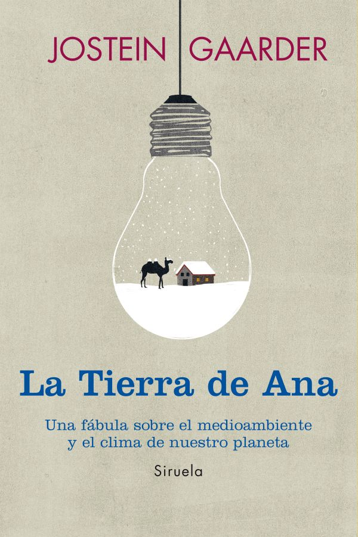
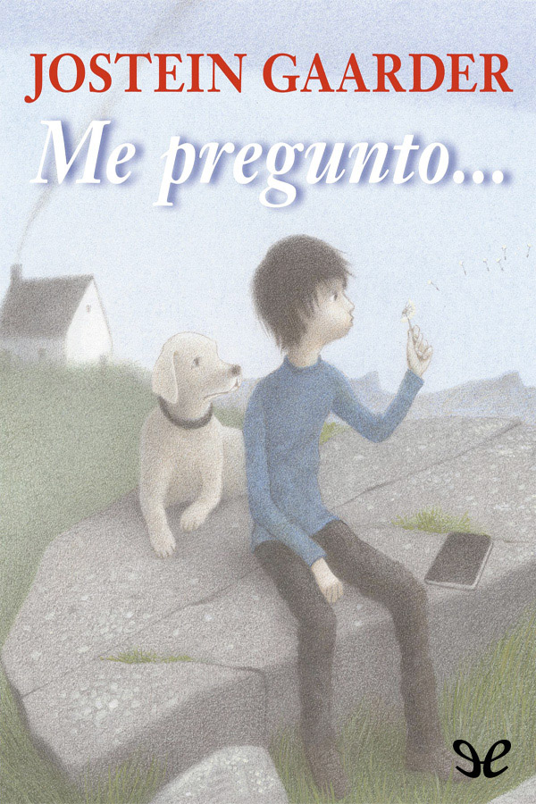

Libros caralludos...
Algunos de mis libros favoritos. Libros caralludos que he leído, tocado, vivido, viajado...
Y recuerda que tienes derecho a no leer, a saltarte páginas, a no terminar un libro, a releer lo que quieras y donde quieras, a leer en voz alta, a leer en silencio... A leer.

Aku-Aku: El secreto de la Isla de Pascua
Thor Heyerdahl, 1957
El hombre de las marionetas
Jostein Gaarder, 2019

La tierra de Ana
Jostein Gaarder, 2013

El misterio de la Navidad
Jostein Gaarder, 1992

El mundo de Sofía
Jostein Gaarder, 1991

El misterio del solitario
Jostein Gaarder, 1990
El enigma y el espejo
Jostein Gaarder, 1993

Me pregunto
Jostein Gaarder, 2012

La joven de las naranjas
Jostein Gaarder, 2003

El viaje de Brendan
Tim Severin, 1980

Rebeldes
Susan E. Hinton, 1967

Lo dije sin querer
Javier B. Iñiguez, 2023

El ángel de la ciudad
Eva Garcia Sáenz de Urturi, 2023

El libro negro de las horas
Eva Garcia Sáenz de Urturi, 2022

Los señores del tiempo
Eva Garcia Sáenz de Urturi, 2018

Los ritos del agua
Eva Garcia Sáenz de Urturi, 2017

El silencio de la ciudad blanca
Eva Garcia Sáenz de Urturi, 2016

Antonio Vega. Una vida entre las cuerdas
Mangela Ronda, 2023

Hasta donde me lleve el viento. 25 años por los mares del mundo
Eduardo Rejduch de la Mancha, 2021

Atrapa tu sueño
Candelaria y Herman Zapp, 2007

El tiempo entre costuras
María Dueñas, 2009

Invisible
Eloy Moreno, 2018

El barón rampante
Italo Calvino, 1957

Resistencia: Un año en el espacio
Scott Kelly, 2018